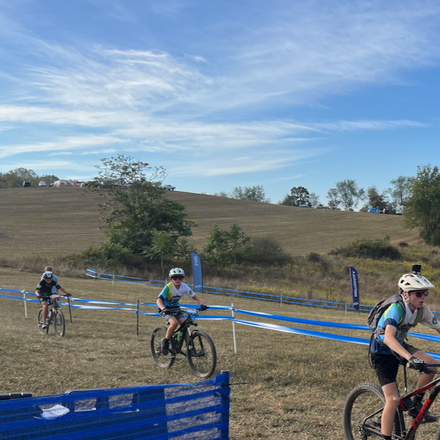

For students in grades 5-12 of all ability levels, with seasons running from late May through early October
The North Coast Gnarwhals are the Cleveland area's only team affiliated with the National Interscholastic Cycling Association (NICA) and compete as part of the Ohio Interscholastic Cycling League. Open to students in grades 5-12, the Gnarwhals emphasize teamwork, personal growth, and the joy of riding—no tryouts, no cuts, just a welcoming environment where everyone rides. The Gnarwhals primarily practice at the Medina mountain bike trail system.
Our practices feature group rides and skill drills, creating a fun environment where kids can build friendships.
No practice commitment required. The more you can attend, the merrier!
The season includes six events starting in June with races beginning in August. Races are optional. Student-athletes can race as much or as little as they like or simply enjoy team practices.
The official race schedule is available on the Ohio Interscholastic Cycling League website.
View the Race ScheduleA bike, a helmet and a water bottle are all you need.
No bike? No problem. You can borrow a Gnarwhals loaner bike for the season by emailing our head coach, or bring your own if you prefer.
The only other required gear is a helmet and a water bottle. If you don't have a helmet, please let us know and we'll track one down for you.
NICA and the North Coast Gnarwhals are 501(c)(3) non-profit organizations.
If you have questions about joining the North Coast Gnarwhals or want to register for the upcoming season, we'd love to hear from you!
Email: northcoastgnarwhals@gmail.com
Location: Serving the greater Cleveland and Medina, Ohio area
Season: Late May through early October